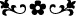

tâbi olmak, bid’at ve ilhâddan başka bir netice doğurmaz.
Sadreddin et-Tebrîzî’den şöyle bir hikâye anlatılmaktadır: “Tebriz’de kendisine
“ârif” denilen bir adam vardı. Bu adam bir gün âriflerden birinin meclisine geldi. Ârif
zât, adama: “İsmin nedir?” diye sordu. Adam: “İsmim Mahmûd; fakat bana ârif derler.”
dedi. Ârif zât, adama: “Kendi zâtını tanıdığın için mi sana ârif denildi?” diye sordu.
Adam: “Sûfîlerin ve meşâyihin makalelerini ihtivâ eden bir çok kitap okudum.” dedi.
Ârif ona: “Bunlar o kişilerin sözleri. Sende ne var?” dedi. Şâir der ki:
İnsan kendi kanadıyla uçmalıdır,
Başkalarının kanadıyla uçulmaz.
Gerçek şu ki, muhtevâsıyla amel etmeden ve gerçeklerini araştırmadan, sadece kitap
bir fayda vermez. Bu şu duruma benzer: Bir tüccar kölesini alış-verişe gönderse, köle
de aldığı şeylerin bir listesini yaparak şunları ve şunları aldım, diyerek efendisine
mektup gönderse, efendisi sadece kâğıtta yazılı olan bu bilgilere dayanarak –o mallar
eline ulaşmadan– satış yapamaz. Zira üzerinde alış verişin gerçekleşeceği mallar ortada
olmadıktan sonra kâğıtta yazılı bilgilerin bir anlamı yoktur. Mesnevî’de der ki:
Gökyüzünde yukarıya doğru uçan kuşun gölgesi,
Tâbii yer üzerinde; kuş gibi uçar görünür.
Ahmak avcı, o yer üzerinde uçan gölgenin peşinden koşar.
Bu sermâyesiz, boşuna bir koşudur.
Cahiller bilmez ki, yerdeki gölge gökteki kuşundur.
O kuşun kendisinin nerede olduğundan habersizdirler.
Kuşun gölgesi tarafına ok atmaktadırlar.
Kuşu vuracağım diye torbada ok kalmaz.
Hayat çantasını boşalttı, ömrünü tüketti.
Gölge avlamaktan, boş koşmaktan kızıştı.
Böylelerine eğer Hakk’ın yardımı yetişirse,
Kendisini hayâl olan şeylerin peşinden koşmaktan kurtarır.
[342]. Buhârî, Îmân, 4, 5; Müslim, Îmân, 64, 65; Tirmizî, Kıyâmet, 52; Nesâî, Îmân,
8,9; Müsned, II, 160, 163, 187
[343]. Buhârî, salât, 48, 54; Cenâiz, 71; Menâkıbü’l-ensâr, 37; Müslim, Mesâcid, 16,
18; Nesâî, Mesâcid, 13; Müsned, VI, 51
[344]. Muvatta’, Sefer, 85
[345]. Muvatta’, Sefer, 85 Müsned, II, 246
[346]. Tirmizî, Kıyâmet, 19; İbn Mâce, Zühd, 24.
[347]. Müslim, Îmân, 145; Tirmizî, Birr, 4; Müsned, II, 164
[348]. Ebû Dâvud, Büyû, 3; Tirmizî, Büyû, 1; Nesâî, Büyû, 2; Kazâ, 11; Eşribe, 50;